基本技 12キャラクター × 10操作
Godot実描画による姿勢・モーション確認用。矢印はキャラクターの向きに対する前後です。ジャンプの移動軌道は別途、実際の物理・当たり判定テストで確認しています。
アッキー
小さく構えて鋭く踏み込む総合格闘
P 雷ジャブ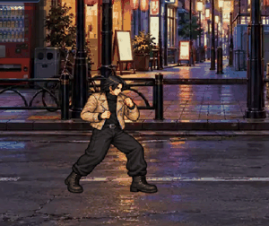
発生 60 ms / 硬直 150 ms→ P 雷踏み込み拳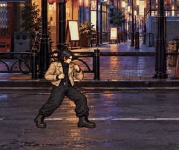
発生 80 ms / 硬直 180 ms↓ P 雷低突き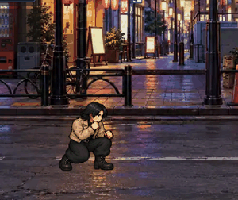
発生 90 ms / 硬直 170 ms← P 雷かち上げ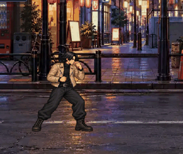
発生 120 ms / 硬直 220 ms↑ P 雷飛び拳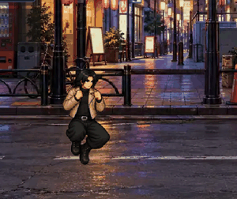
発生 130 ms / 硬直 180 msK 雷前蹴り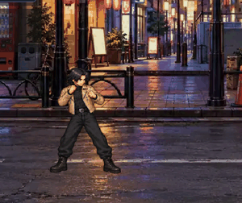
発生 150 ms / 硬直 310 ms→ K 雷速蹴り発生 110 ms / 硬直 300 ms↓ K 雷足払い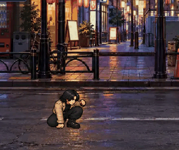
発生 160 ms / 硬直 350 ms← K 雷押し蹴り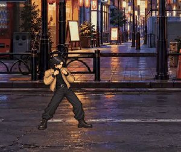
発生 160 ms / 硬直 340 ms↑ K 雷飛び蹴り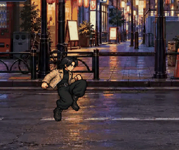
発生 160 ms / 硬直 330 ms 豪
低い重心と大きな腕振りの剛力
P 剛ジャブ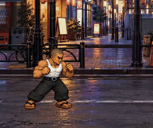
発生 69 ms / 硬直 172 ms→ P 剛踏み込み拳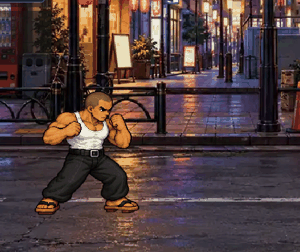
発生 92 ms / 硬直 207 ms↓ P 剛低突き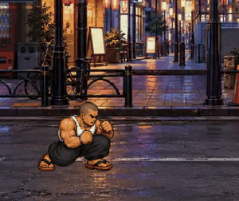
発生 104 ms / 硬直 196 ms← P 剛かち上げ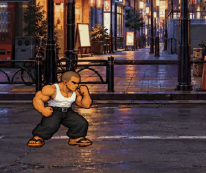
発生 138 ms / 硬直 253 ms↑ P 剛飛び拳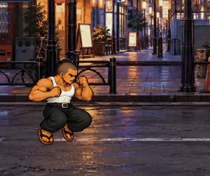
発生 150 ms / 硬直 207 msK 剛前蹴り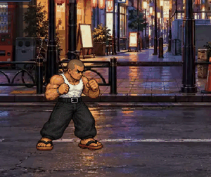
発生 172 ms / 硬直 356 ms→ K 剛速蹴り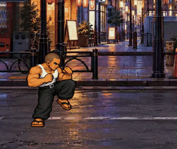
発生 126 ms / 硬直 345 ms↓ K 剛足払い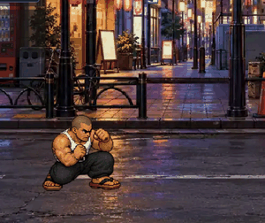
発生 184 ms / 硬直 402 ms← K 剛押し蹴り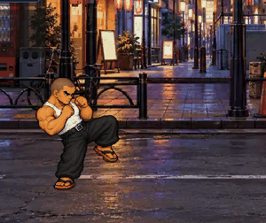
発生 184 ms / 硬直 391 ms↑ K 剛飛び蹴り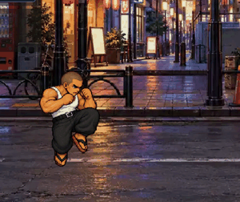
発生 184 ms / 硬直 380 ms セイヤ
細身の体を伸ばす軽快な速攻
P 閃ジャブ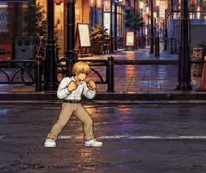
発生 49 ms / 硬直 123 ms→ P 閃踏み込み拳発生 66 ms / 硬直 148 ms↓ P 閃低突き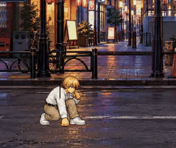
発生 74 ms / 硬直 139 ms← P 閃かち上げ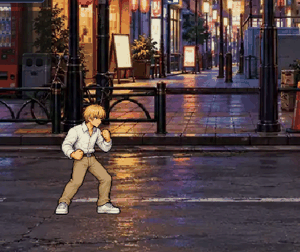
発生 98 ms / 硬直 180 ms↑ P 閃飛び拳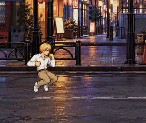
発生 107 ms / 硬直 148 msK 閃前蹴り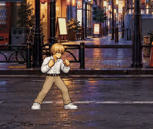
発生 123 ms / 硬直 254 ms→ K 閃速蹴り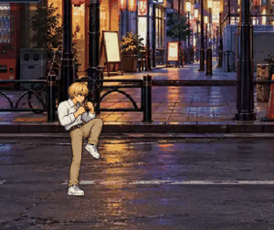
発生 90 ms / 硬直 246 ms↓ K 閃足払い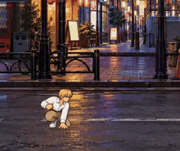
発生 131 ms / 硬直 287 ms← K 閃押し蹴り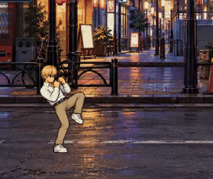
発生 131 ms / 硬直 279 ms↑ K 閃飛び蹴り発生 131 ms / 硬直 271 ms クラッシャー
巨体で押し込む重量級の打撃
P 鉄塊ジャブ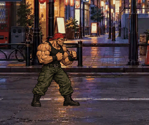
発生 75 ms / 硬直 188 ms→ P 鉄塊踏み込み拳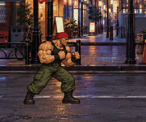
発生 100 ms / 硬直 225 ms↓ P 鉄塊低突き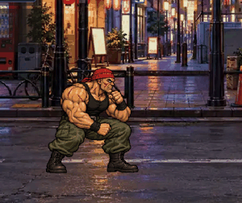
発生 112 ms / 硬直 212 ms← P 鉄塊かち上げ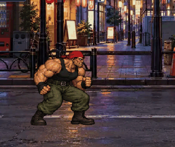
発生 150 ms / 硬直 275 ms↑ P 鉄塊飛び拳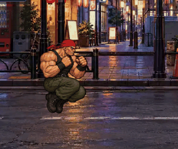
発生 162 ms / 硬直 225 msK 鉄塊前蹴り発生 188 ms / 硬直 388 ms→ K 鉄塊速蹴り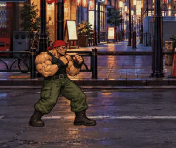
発生 138 ms / 硬直 375 ms↓ K 鉄塊足払い発生 200 ms / 硬直 438 ms← K 鉄塊押し蹴り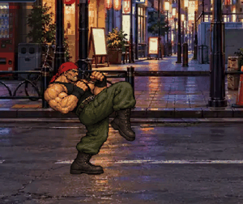
発生 200 ms / 硬直 425 ms↑ K 鉄塊飛び蹴り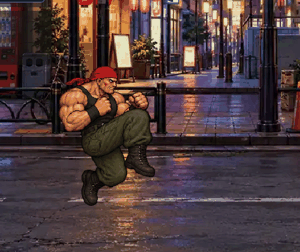
発生 200 ms / 硬直 412 ms シャドウボクサー
高いガードから伸びるボクシング
P 影ジャブ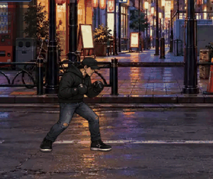
発生 48 ms / 硬直 120 ms→ P 影踏み込み拳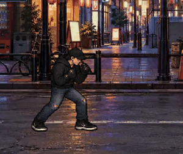
発生 64 ms / 硬直 144 ms↓ P 影低突き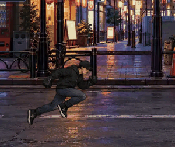
発生 72 ms / 硬直 136 ms← P 影かち上げ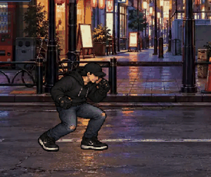
発生 96 ms / 硬直 176 ms↑ P 影飛び拳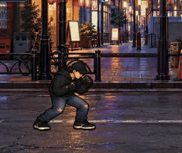
発生 104 ms / 硬直 144 msK 影前蹴り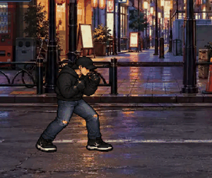
発生 120 ms / 硬直 248 ms→ K 影速蹴り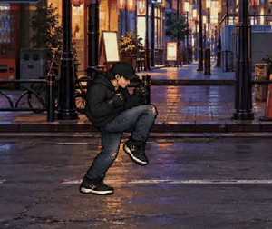
発生 88 ms / 硬直 240 ms↓ K 影足払い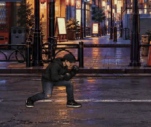
発生 128 ms / 硬直 280 ms← K 影押し蹴り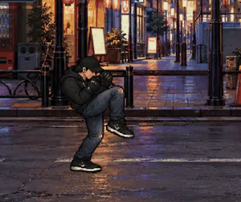
発生 128 ms / 硬直 272 ms↑ K 影飛び蹴り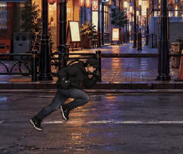
発生 128 ms / 硬直 264 ms 高橋雅人
腰を落として崩す柔道家の足技
P 静ジャブ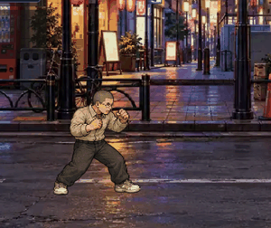
発生 67 ms / 硬直 168 ms→ P 静踏み込み拳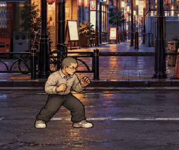
発生 90 ms / 硬直 202 ms↓ P 静低突き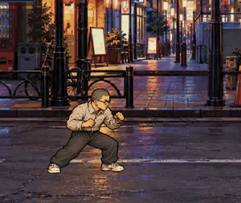
発生 101 ms / 硬直 190 ms← P 静かち上げ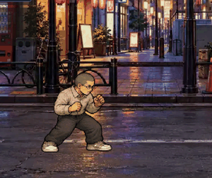
発生 134 ms / 硬直 246 ms↑ P 静飛び拳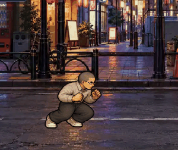
発生 146 ms / 硬直 202 msK 静前蹴り発生 168 ms / 硬直 347 ms→ K 静速蹴り発生 123 ms / 硬直 336 ms↓ K 静足払い発生 179 ms / 硬直 392 ms← K 静押し蹴り発生 179 ms / 硬直 381 ms↑ K 静飛び蹴り発生 179 ms / 硬直 370 ms 影山レイ
胸を開いて打ち上げる荒々しい空手
P 昇龍ジャブ発生 65 ms / 硬直 162 ms→ P 昇龍踏み込み拳発生 86 ms / 硬直 194 ms↓ P 昇龍低突き発生 97 ms / 硬直 184 ms← P 昇龍かち上げ発生 130 ms / 硬直 238 ms↑ P 昇龍飛び拳発生 140 ms / 硬直 194 msK 昇龍前蹴り発生 162 ms / 硬直 335 ms→ K 昇龍速蹴り発生 119 ms / 硬直 324 ms↓ K 昇龍足払い発生 173 ms / 硬直 378 ms← K 昇龍押し蹴り発生 173 ms / 硬直 367 ms↑ K 昇龍飛び蹴り発生 173 ms / 硬直 356 ms クロス村雨
開いた手で間合いを制する打撃
P 無影ジャブ発生 58 ms / 硬直 144 ms→ P 無影踏み込み拳発生 77 ms / 硬直 173 ms↓ P 無影低突き発生 86 ms / 硬直 163 ms← P 無影かち上げ発生 115 ms / 硬直 211 ms↑ P 無影飛び拳発生 125 ms / 硬直 173 msK 無影前蹴り発生 144 ms / 硬直 298 ms→ K 無影速蹴り発生 106 ms / 硬直 288 ms↓ K 無影足払い発生 154 ms / 硬直 336 ms← K 無影押し蹴り発生 154 ms / 硬直 326 ms↑ K 無影飛び蹴り発生 154 ms / 硬直 317 ms リオ・ガルシア
弾むような体重移動の蹴り
P 疾駆ジャブ発生 56 ms / 硬直 141 ms→ P 疾駆踏み込み拳発生 75 ms / 硬直 169 ms↓ P 疾駆低突き発生 85 ms / 硬直 160 ms← P 疾駆かち上げ発生 113 ms / 硬直 207 ms↑ P 疾駆飛び拳発生 122 ms / 硬直 169 msK 疾駆前蹴り発生 141 ms / 硬直 291 ms→ K 疾駆速蹴り発生 103 ms / 硬直 282 ms↓ K 疾駆足払い発生 150 ms / 硬直 329 ms← K 疾駆押し蹴り発生 150 ms / 硬直 320 ms↑ K 疾駆飛び蹴り発生 150 ms / 硬直 310 ms テキ
長い手足と深い腰構え
P 封ジャブ発生 64 ms / 硬直 160 ms→ P 封踏み込み拳発生 86 ms / 硬直 193 ms↓ P 封低突き発生 96 ms / 硬直 182 ms← P 封かち上げ発生 128 ms / 硬直 235 ms↑ P 封飛び拳発生 139 ms / 硬直 193 msK 封前蹴り発生 160 ms / 硬直 332 ms→ K 封速蹴り発生 118 ms / 硬直 321 ms↓ K 封足払い発生 171 ms / 硬直 374 ms← K 封押し蹴り発生 171 ms / 硬直 364 ms↑ K 封飛び蹴り発生 171 ms / 硬直 353 ms レオン・クロウ
しなやかな上体と長く伸びる蹴り
P 黒翼ジャブ発生 53 ms / 硬直 132 ms→ P 黒翼踏み込み拳発生 70 ms / 硬直 158 ms↓ P 黒翼低突き発生 79 ms / 硬直 150 ms← P 黒翼かち上げ発生 106 ms / 硬直 194 ms↑ P 黒翼飛び拳発生 114 ms / 硬直 158 msK 黒翼前蹴り発生 132 ms / 硬直 273 ms→ K 黒翼速蹴り発生 97 ms / 硬直 264 ms↓ K 黒翼足払い発生 141 ms / 硬直 308 ms← K 黒翼押し蹴り発生 141 ms / 硬直 299 ms↑ K 黒翼飛び蹴り発生 141 ms / 硬直 290 ms 闇セイヤ
セイヤの身体技を鋭く、闇の演出を維持
P 冥ジャブ発生 54 ms / 硬直 135 ms→ P 冥踏み込み拳発生 72 ms / 硬直 162 ms↓ P 冥低突き発生 81 ms / 硬直 153 ms← P 冥かち上げ発生 108 ms / 硬直 198 ms↑ P 冥飛び拳発生 117 ms / 硬直 162 msK 冥前蹴り発生 135 ms / 硬直 279 ms→ K 冥速蹴り発生 99 ms / 硬直 270 ms↓ K 冥足払い発生 144 ms / 硬直 315 ms← K 冥押し蹴り発生 144 ms / 硬直 306 ms↑ K 冥飛び蹴り発生 144 ms / 硬直 297 ms